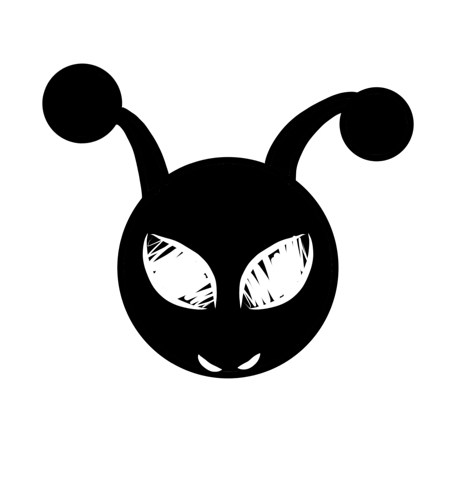

SEU ESPAÇO CRIATIVO
Meus projetos
Um lugar para todas as suas ideias.
ORGANIZAÇÃO
Pastas organizam. Workspaces dão vida às ideias.
SOBRE O PROJETO
Amophor
OPEN WORKSPACE
Criado por Oformiga, Amophor é um espaço criativo desenvolvido para organizar ideias, conectar conceitos e dar forma a projetos de maneira simples e livre.
O programa nasceu como uma ferramenta quebra-galho, pensada originalmente para desenvolvedores de jogos independentes (gamedevs) que precisam de um lugar para reunir anotações, personagens, histórias, referências visuais e outros elementos durante o processo de criação. Sua proposta nunca foi substituir ferramentas profissionais ou oferecer soluções excessivamente complexas, mas reunir recursos úteis em um ambiente acessível, prático e personalizável.
Apesar de suas origens ligadas ao desenvolvimento de jogos, o Amophor não se limita a esse universo. Escritores, artistas, estudantes e qualquer pessoa que precise organizar pensamentos ou desenvolver projetos podem encontrar nele um espaço para experimentar, planejar e criar sem depender de uma estrutura rígida.
O nome Amophor foi inspirado na Amorphophallus, um gênero de plantas conhecido por suas formas incomuns e aparência marcante. A escolha reflete a identidade do programa: algo diferente, um pouco estranho e fora dos padrões convencionais, mas que possui sua própria beleza e utilidade.
Mais do que uma ferramenta de produtividade, o Amophor é um pequeno projeto independente, construído a partir de necessidades reais e da vontade de transformar soluções improvisadas em algo que outras pessoas também possam aproveitar.

Oformiga
Gabriel Ferreira Formiga
Criador e desenvolvedor do Amophor.
Amophor — Open Workspace · Versão 6.2